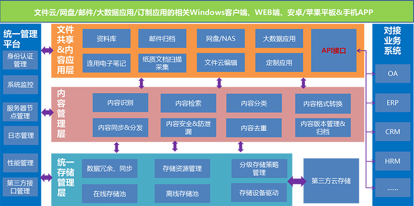
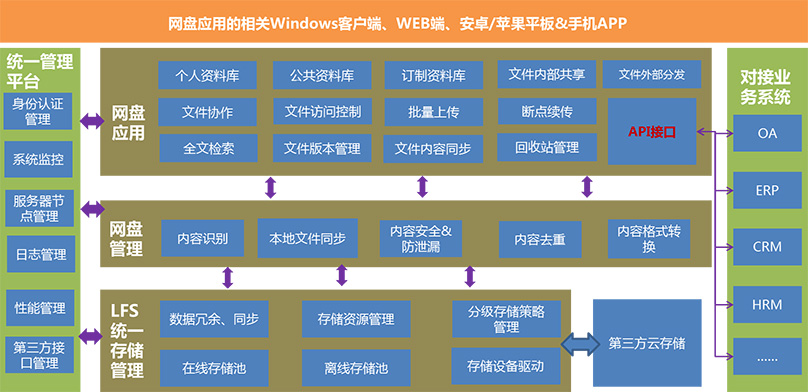
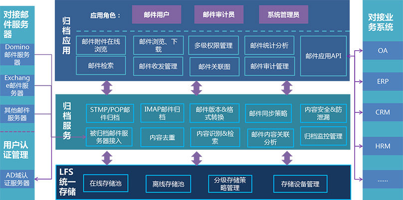
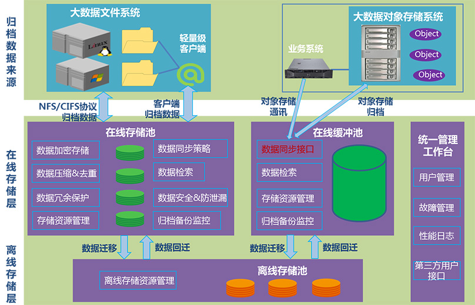
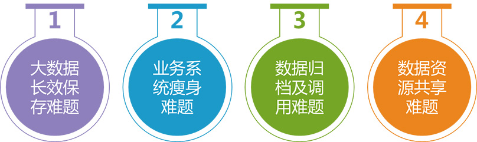

LFS私有文件云系统
LFS连用私有文件云系统简介
非结构化数据是指由于各种电子设备产生的文档、图片、音视频、各类文件等无法存储在关系数据库中的数据。在大数据时代，这些数据是企业宝贵的信息资产，可以为企业创造巨大的经济价值。然而企业非结构化数据通常存储过于分散，无法被企业有效利用，甚至威胁着企业信息安全，阻碍企业办公效率的提升等。
LFS（LinkApp File Server )连用私有文件云系统是专注为企业的非结构化数据文件提供统一存储管理、文件安全管理、内容分类管理以及文件协同应用的私有云文件服务器系统，基于LFS可以建立企业一站式的文件资源中心和协作应用私有云平台。LFS系统为企业的非结构化数据资产提供了包括：“存”、“管”、“控”、“用”全方位多功能的最佳解决方案。

功能架构图
系统特性
√性能和成本上有较大优势
LFS采用业界最成熟的GFS分布式云文件系统，兼容各种存储设备（如NAS/SAN/DAS）,支持负载均衡，支持最大超过100PB的存储容量，自带容灾功能，在满足企业数据管理需求的同时有效降低存储的总体拥有成本。LFS具备的内容重复数据删除特性更可将现有硬件存储利用率大幅度提高至50%以上。
√LFS具备高可用性
数据在底层存储时会在不同硬盘上保存多份，每份份可并行对外提供服务（对用户透明）；当系统损坏一块、两块硬盘时，系统可正常运行，并且不影响数据完整性。
√采用分级存储实现数据全生命周期管理
LFS可建立在线、近线、离线的企业私有云分级存储系统，实现了容量、性能和成本的最佳平衡，同时实现了数据的全生命周期管理。
√具备多重安全管控措施
LFS具有完整的文件安全操作和信息分享机制，可做到底层存储与在线浏览双重加密，具备文件操作日志留痕和防信息泄漏功能，为企业单位建立高效、安全的文件管控体系。
√具备强大的文件共享与检索功能
LFS提供的公共资料库模板定制功能以及企业个人网盘资料发布至公共资料库的简易操作，为企业提供内容分类管理。支持对资料库文件全文检索或依据关键字检索，提供便利的内部文件共享功能，并支持外链分发给客户等。
√建立企业非结构化数据中心
LFS基于分布式文件系统，提供了强大、稳定的底层存储支撑，同时在上层通过NAS协议或API接口便捷的与信息系统对接，可归档备份信息系统所有非结构化数据，实现企业非结构化数据中心的建立。
用户价值
为企业用户提供高性价比的私有云盘服务；
实现企业非结构化数据集中存储，统一管理，提升企业办公效率，有效防止企业信息安全风险；
与企业业务系统集成，可以为业务系统提供数据存储服务，甚至可为企业业务系统“瘦身”，提升业务系统性能；
提供跨平台、统一的企业级数据检索服务，与企业信息系统对接，可检索企业内部所有非结构化数据，涵盖所有信息系统，个人办公文件等，并支持全文检索。
LFS企业网盘系统
LFS企业网盘系统介绍
LFS连用企业网盘是业界领先的企业网盘应用方案，底层存储基于LFS文件云存储，以分布式文件系统等大数据技术为基础，拥有良好的稳定性、扩展性以及可用性。连用网盘在公司总部、分级机构、内部员工、客户和合作伙伴中架起了一座数据沟通，共享分发的桥梁，使信息的沟通，文件的交换变得更加高效和安全。网盘具有较高的性价比，可以非常方便的对空间进行线性扩展，支持数据自动同步，提供PC客户多，移动APP等多种登录方式，让用户体验了快捷、便利的网盘应用。

功能架构图
网盘功能介绍
定制资料库
制定个性化的资料显示方式，字段描述，能够更加直观、方便的浏览或者检索文件，如图片资料库可以图片预览模式显示。
文件版本自动管理
对文件目录实施自上而下的权限管理，可按照组织架构、角色或者具体的用户来控制文件访问权限。
文件权限管理
用户每次针对文件的任何操作都可被记录，包括对文件的浏览。记录包括操作类型、时间、访问用户、IP等。
文件级日志记录
系统内按照用户、部门或者工作组进行文件共享；系统外可针对文件生成外链或者邮件加外链的形式分发。
文件共享与分发
系统内按照用户、部门或者工作组进行文件共享；系统外可针对文件生成外链或者邮件加外链的形式分发。
支持全文检索
网盘支持全文检索，同时可按照关键字等常规字段数据进行检索。
自动同步机制
系统支持手动同步数据，设定时间点或时间间隔进行自动同步。
安全管理
系统可对共享分发过程进行严格管控，如打开次数限定、时间限定等；支持对文件或文件目录进行安全及防泄密管控；支持对文件后台存储的安全保护。
API接口管理
网盘提供API接口，可实现直接对其他业务系统进行对接，实现数据的云盘管理。
多种登录方式
系统支持多种登录方式，可通过web端登录进行管理和应用，可通过PC客户端或者移动APP进行应用。
LFS大数据邮件系统
LFS_BigMail连用大数据邮件管理系统介绍
连用大数据邮件管理系统是基于连用企业文件云基础架构之上的一个功能子系统。LFS支持对非结构化数据、邮件数据、办公文档、电子附件数据等进行存储归档与应用，实现了一个平台支持多种数据类型的存储归档与应用需求，LFS_BigMail依托于LFS强大的数据存储及管理功能，通过API接口与企业邮件服务器对接，为企业提供邮件归档备份功能，在数据存储层为企业解决了邮件永久保存难题，遵从法规以及为邮件审计提供便利；在数据管理及应用层，提供强大的邮件检索和邮件安全管控等功能。通过API接口与LFS以及邮件服务器集成，能够关联所有业务数据，实现资源有效整合和信息共享的目的。

功能架构图
产品功能与用户价值介绍
√提供邮件收发功能，减少邮件系统的存储成本和维护成本
提供邮件收发管理界面，用户可直接使用LFS_BigMail进行邮件的收发，企业邮件服务器只需提供邮件路由功能，仅负责中转内部邮件和收发外部的邮件，由LFS_BigMail进行归档保存，在保证邮件的安全的同时显著提高了邮件服务器的性能，大大简化了用户的邮件系统的使用与管理成本。
√提供邮件归档功能
LFS_BigMail服务器支持SMTP/IMAP、POP等邮件通信协议，使MS Exchange、Lotus Domino等邮件服务器和各种邮件网关都可以归档邮件到相同的LFS_BigMail服务器上，具备归档多种类型邮件服务系统的能力。
√实现对邮件的高效快速检索以及和其它业务系统进行数据关联的功能
对被归档的邮件，用户通过权限认证后，可以查询或下载邮件数据，同时支持审计员检索和审计。LFS_BigMail对外提供丰富的API，满足其它第三方业务平台的嵌入，实现企业多元化的应用需求。
√提供邮件信息安全管控功能，实现企业内部对信息安全管理的需要
通过邮件泄露机密文件是企业面临的难题。邮件作为公司最重要的通讯手段，很多公司有必要在需要时了解企业内部员工和外部客户使用电子邮件进行沟通的情况。LFS_BigMail支持分配不同的角色访问权限来控制用户对邮件的安全访问，除了个人用户，审计员或获得授权的人员也可以随时方便地进行邮件查询和审计。
√提供邮件法规遵从、邮件审计功能，满足相关行业要求
由于归档的邮件原则上是永不删除的，所以企业邮件不会再因为用户删除邮件、误操作或是设备损坏而丢失，满足了政府等部门对原始邮件原样保存的要求。同时，用户可以随时使用各种查询组合条件对归档的历史邮件进行快速检索。
√提供邮件信息生命周期管理功能，实现完整的数据备份容灾功能
邮件数据按信息生命周期进行分级存储，支持归档邮件到磁带库，实现邮件的长久离线归档保存和随时调取。支持集群部署，具有负载均衡、高可扩展等特点，满足不同规模用户的要求。用户无需购买第三方专业邮件归档软件，系统具有极强的在线容量扩展能力和性能扩展能力。
LFS大数据归档管理系统
LBAM大数据归档管理系统介绍
连用大数据归档管理系统(LinkAPP BigData Archive Manager 简称 LBAM），是一个低成本、超大规模、独立于硬件的分布式私有云归档系统。能够轻易地对性能和容量进行线性扩展，可以安装在标准的X86商业硬件上，提供对不同种类存储介质的统一管理，能够支持PB级的存储容量和处理数千客户端的访问，具有负载均衡、高可扩展等特性，满足企业私有云存储的专业要求。

功能架构图
解决企业四大问题
√当前，数据呈爆炸式增长，数据的存储及安全面临考验，同时大数据的需求也日益高涨，如何归档及管理数据是企业必须面对的问题：

系统特性介绍
支持CIFS/NFS等NAS协议，Windows平台通过CIFS标准协议挂载归档服务器上的在线存储池，UNIX/LINUX/MAC服务器可以通过NFS协议挂载在线存储池。
实现对象存储接口，提供Put, Get, Delete, Reserve等操作接口，用户可以使用这些对象存储OBS APIs，轻松把自己的应用程序连接到对象存储系统中。
支持通过轻量级归档代理客户端让用户进行归档备份策略的配置与管理。主要实现通过CIFS/NFS等标准NAS协议把数据传输到后端的存储服务器的在线存储池中。
应用服务器无法主动做数据归档备份时，可通过Clientless模式归档数据，由LBAM系统Clientless功能模块主动读取数据，并将应用数据传输到统一存储池保存。
√支持两种数据类型的归档
非结构化数据在信息系统中的存储一般有两种方式，文件存储或对象存储。企业会根据自身数据特点以及管理要求来选择数据的存储方式。在大数据时代，这两种数据存储方式都需要更好的归档备份方案，LBAM是支持对两种形式的数据进行归档保护。
√高扩展性
系统后端存储架构采用基于Server SAN的分布式集群方式工作，服务器节点可以扩展到数千个，支持弹性扩容，在不中断业务的情况下，实现存储空间的大规模在线扩容，存储空间可以从TB级线性扩展到PB级整个，扩容过程对用户完全透明，用户可以不间断使用系统的存储空间。
底层采用大数据运算技术原理，具备高效的并发运算能力，当数据的读写性能或网络带宽不足时，也可以增加存储节点，以实现性能的线性增长。
√文件全生命周期管理
采用存储资源虚拟化技术统一管理所有存储空间，建立不同类型存储池：在线存储池、近线存储池、离线存储池。不同文件可采用不同的存储策略：活跃文件——在线存储池；半活跃文件——进线存储池；不活跃文件——离线存储池，从而实现数据的全生命周期管理。
√安全性
系统对用户的访问请求都要进行身份认证，只有合法用户才能进入系统。确保数据访问的安全性，防止数据被非法访问。
系统使用HTTPS协议保证传输过程中的数据安全，确保数据在传输过程中不被非法用户恶意窃听。后端可以选择文件是否进行加密存储，有效地保障了数据在系统中的安全性。